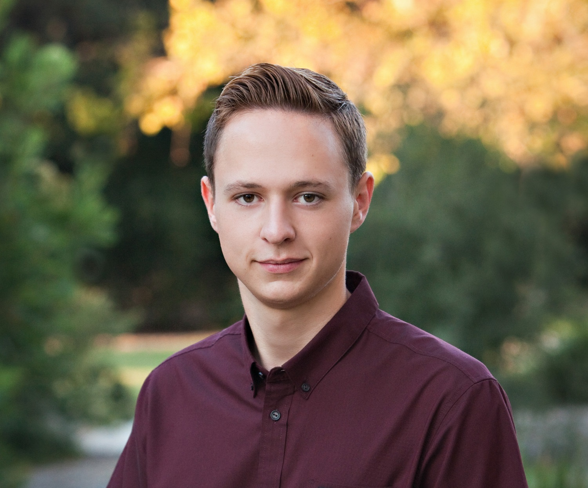

Introduction
Hello! I’m Will and I am currently a System Engineer at Valeo North America in Troy, Michigan. I graduated from Rose-Hulman Institute of Technology with a Bachelor of Science degree in Mechanical Engineering in 2021. While at Rose-Hulman I was a member of the Robotics Club, serving as a project design lead, club treasurer, and later I would be elected club president. I’ve been working with 3D printers and SolidWorks since high school, when I built my own 3D printer and designed a quadcopter drone to be 3D printed. My hobbies also include mountain biking and taking a supercharged Mazda Miata to open-track days and autocross events.
Today, I’m searching for a new job opportunity that will challenge me and is more relevant to my skillset and passions. I’ve designed this website to let potential employers get to know more about me than can be conveyed on just a resume. Please feel free to explore the “Portfolio” page, which contains pictures and media related to some of my previous projects, as well as the “Resume” page which provides an extended version of my resume with links for more details about the items shown.
While my current address is in Michigan and I would consider another job here, my job search is primarily focused on Austin, Dallas, San Antonio, Los Angeles, and Indianapolis. This is because I have family in each of these cities and I would like to move closer to them. I can easily relocate myself regardless of whether relocation assistance is offered by my future employer.
Thank you for visiting! You can email me at wrdetterman@gmail.com